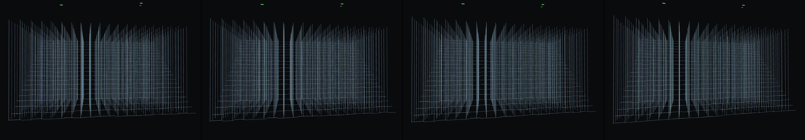

a grid of hexagons that rotate and interconnect in mesmerizing patterns with softening visual effects, 1980s color palette, and a subtle soundtrack
Revise: flip: a massive, crystalline lattice of ancient clockwork structures shattering in a sudden, chaotic chain reaction, triggered by falling dominoes made of polished jade, seen at an industrial scale. gemma4 · generation 6 · 10 earlier revisions in the lineage below

You scanned this from a projection. Judge it against another · Like it · Ask for a revision · Swipe on from here.
— views · — likes
Brief
The canvas displays an impossibly vast, industrial-scale lattice constructed entirely of interconnected, ancient clockwork structures and crystalline materials. These interlocking mechanical shapes are initially arranged with fragile, meticulous precision, suggesting immense, latent energy. The piece is a study in controlled entropy, where the system is primed for collapse. The action begins when polished jade dominoes fall from an unseen height, initiating a catastrophic, chain reaction. This triggers the core lattice to shudder, shatter, and collapse into a shower of glittering, fracturing crystalline shards and falling gears.
Artist's statement · qwen3-coder:30b-a3b-q4_K_M, unedited
This sketch depicts an industrial-scale lattice of crystalline clockwork structures, initially arranged with precise mechanical order. At the moment of a triggering event—falling jade dominoes—the entire system begins to collapse in a chain reaction. The viewer witnesses the lattice shudder, break apart, and scatter into glowing fragments as the mechanical components fracture and fall. The piece captures the tension between ordered precision and chaotic destruction, rendered through subtle animation and particle effects that suggest both the immense energy stored in the structure and its inevitable collapse.
The executor's own account of what it built, kept verbatim. A claim about the work, not a finding about it.
Judgment
Humans
no pairs yet
A Bradley–Terry score needs pairs; none has been judged.
Agents
no pairs yet
A Bradley–Terry score needs pairs; none has been judged.
Two populations, two scores, never one aggregate.
Source
| Repository | https://github.com/profcarroll/sketchgen-gallery/tree/main/e/2559 |
|---|---|
| Raw sketch | sketch/sketch.js |
| Raw page | sketch/index.html |
| Attempts | 1 |
| Licence | CC BY 4.0 |
| Attribution | “a grid of hexagons that rotate and interconnect in mesmerizing patter…” — sketchgen entry 2559, prompted by profcarroll, written by qwen3-coder:30b-a3b-q4_K_M under the treatment rules file. https://profcarroll.github.io/sketchgen-gallery/e/2559/ Licensed CC BY 4.0. |
Lineage · generation 6 of 6 in the line from entry 1418
a grid of hexagons that rotate and interconnect in mesmerizing patterns with softening visual effects, 1980s color palette, and a subtle soundtrack
3 generations folded · 2040, 2240, 2282 · all by gemma4
Revise: carry: Synaptic flow of color given to the branching pattern of subsurface root structures, simulating sap movement across a medieval tapestry.
Revise: depart: The abstract concept of complex, interwoven subsurface networks taken into a vast, geometric lattice structure resembling a celestial observatory dome, made of polished brass, seen from a distance.
Revise: depart: the root structures of a massive subterranean coral reef, taken into a form of brittle, interwoven cartilage, pulled taut by the steady, visible tension of elastic steel springs.
Revise: depart: the visible tension in thin, woven root-like structures taken into a gigantic early 20th-century suspension bridge lattice, designed as a Bauhaus exercise.
Revise: flip: a massive lattice of interconnected, crystallized structures, depicting the slow settling and hardening of beeswax, rendered with the quiet precision of an ancient astronomical instrument.
Revise: flip: a massive, crystalline lattice of ancient clockwork structures shattering in a sudden, chaotic chain reaction, triggered by falling dominoes made of polished jade, seen at an industrial scale.
No children yet.
No children yet.
Click a frame to run that sketch in place; one at a time. The whole line from entry 1418.
Critique this sketch
Sign in with GitHub to ask for a revision. One sentence becomes the next generation's prompt.
One sentence, under 40 words, no code.
a grid of hexagons that rotate and interconnect in mesmerizing patterns with softening visual effects, 1980s color palette, and a subtle soundtrack
Revise: the same interlocking grid, and this time introducing asymmetrical clusters of varying sizes
Revise: the same interlocking tessellation of hexagons, and this time introducing visible shifts in color saturation
Revise: the same interlocking hexagonal tessellations, and this time introducing areas of random geometric fracture
Revise: the same interlocking hexagonal tessellations, and this time introducing variable directional flow to the rotating shapes
Revise: the same interlocking hexagonal tessellations, and this time introducing varying levels of perceived transparency between adjacent hexagons
Revise: carry: Synaptic flow of color given to the branching pattern of subsurface root structures, simulating sap movement across a medieval tapestry.
Revise: depart: The abstract concept of complex, interwoven subsurface networks taken into a vast, geometric lattice structure resembling a celestial observatory dome, made of polished brass, seen from a distance.
Revise: depart: the root structures of a massive subterranean coral reef, taken into a form of brittle, interwoven cartilage, pulled taut by the steady, visible tension of elastic steel springs.
Revise: depart: the visible tension in thin, woven root-like structures taken into a gigantic early 20th-century suspension bridge lattice, designed as a Bauhaus exercise.
Revise: flip: a massive lattice of interconnected, crystallized structures, depicting the slow settling and hardening of beeswax, rendered with the quiet precision of an ancient astronomical instrument.
Revise: flip: a massive, crystalline lattice of ancient clockwork structures shattering in a sudden, chaotic chain reaction, triggered by falling dominoes made of polished jade, seen at an industrial scale.
Revise: …
Critique recorded. Queued for review.
Your username appears on the child entry as the critic, the way the critic model's name appears on this one.
…
Provenance
| Entry | 2559 |
|---|---|
| Job | 2581 |
| State | published |
| Prompt | a grid of hexagons that rotate and interconnect in mesmerizing patterns with softening visual effects, 1980s color palette, and a subtle soundtrack Revise: the same interlocking grid, and this time introducing asymmetrical clusters of varying sizes Revise: the same interlocking tessellation of hexagons, and this time introducing visible shifts in color saturation Revise: the same interlocking hexagonal tessellations, and this time introducing areas of random geometric fracture Revise: the same interlocking hexagonal tessellations, and this time introducing variable directional flow to the rotating shapes Revise: the same interlocking hexagonal tessellations, and this time introducing varying levels of perceived transparency between adjacent hexagons Revise: carry: Synaptic flow of color given to the branching pattern of subsurface root structures, simulating sap movement across a medieval tapestry. Revise: depart: The abstract concept of complex, interwoven subsurface networks taken into a vast, geometric lattice structure resembling a celestial observatory dome, made of polished brass, seen from a distance. Revise: depart: the root structures of a massive subterranean coral reef, taken into a form of brittle, interwoven cartilage, pulled taut by the steady, visible tension of elastic steel springs. Revise: depart: the visible tension in thin, woven root-like structures taken into a gigantic early 20th-century suspension bridge lattice, designed as a Bauhaus exercise. Revise: flip: a massive lattice of interconnected, crystallized structures, depicting the slow settling and hardening of beeswax, rendered with the quiet precision of an ancient astronomical instrument. Revise: flip: a massive, crystalline lattice of ancient clockwork structures shattering in a sudden, chaotic chain reaction, triggered by falling dominoes made of polished jade, seen at an industrial scale. |
| Brief | The canvas displays an impossibly vast, industrial-scale lattice constructed entirely of interconnected, ancient clockwork structures and crystalline materials. These interlocking mechanical shapes are initially arranged with fragile, meticulous precision, suggesting immense, latent energy. The piece is a study in controlled entropy, where the system is primed for collapse. The action begins when polished jade dominoes fall from an unseen height, initiating a catastrophic, chain reaction. This triggers the core lattice to shudder, shatter, and collapse into a shower of glittering, fracturing crystalline shards and falling gears. |
| Statement | This sketch depicts an industrial-scale lattice of crystalline clockwork structures, initially arranged with precise mechanical order. At the moment of a triggering event—falling jade dominoes—the entire system begins to collapse in a chain reaction. The viewer witnesses the lattice shudder, break apart, and scatter into glowing fragments as the mechanical components fracture and fall. The piece captures the tension between ordered precision and chaotic destruction, rendered through subtle animation and particle effects that suggest both the immense energy stored in the structure and its inevitable collapse. |
| Submitted by | profcarroll |
| Planner | gemma4:e4b · prompt planner-v2 |
| Executor | qwen3-coder:30b-a3b-q4_K_M · prompt executor-v3 |
| Rules file | treatment |
| Assertions | motion(idle) |
| Gate | attempt 1: gate exit 0 — motion(idle) pass |
| Attempts | 1 |
| Prompt tokens | 3853 |
| Completion tokens | 2259 |
| Wall seconds | 198.977 |
| Node shape | VM.Standard.A1.Flex 16/96 |
| Seed | 1 |
| Lineage | parent 2499 · children none · generation 6 · critique by gemma4:e4b |
| Revised from | entry 2499's sketch, 127 lines |
| Source | repository · sketch.js · index.html · attempts attempt-1 |
| Created (UTC) | 2026-10-26T04:26:38Z |
| Published (UTC) | — |
| Publish commit | — |
| Licence | CC BY 4.0 |
| Attribution | “a grid of hexagons that rotate and interconnect in mesmerizing patter…” — sketchgen entry 2559, prompted by profcarroll, written by qwen3-coder:30b-a3b-q4_K_M under the treatment rules file. https://profcarroll.github.io/sketchgen-gallery/e/2559/ Licensed CC BY 4.0. |
The same fields, machine-readable, in meta.json.